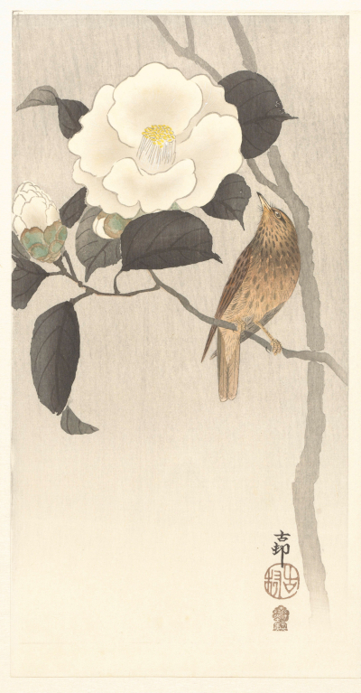

Test purpose
- Code up a bespoke factory which will:
- Create a new group.
- Add a Wheel entity with a 'clip' method to that group.
- Add a Picture entity to the group; the Picture should pivot to the clipper, and add the clipper's rotation to its own.
- Create a tween to rotate the clipper
- Add 'onEnter' and 'onLeave' functions to the clipper so that when user's mouse enters/leaves the clip region, it rotates
- Load the painting and generate several spinning areas in it.
- Create a block entity to act as the trigger to fade in-and-out a Phrase entity describing the painting.
Touch test: should work as expected
Annotated code
